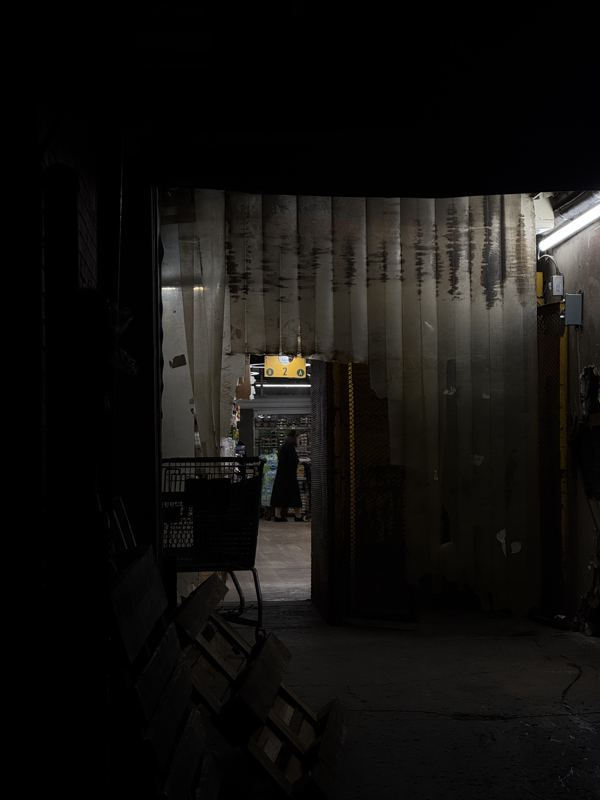
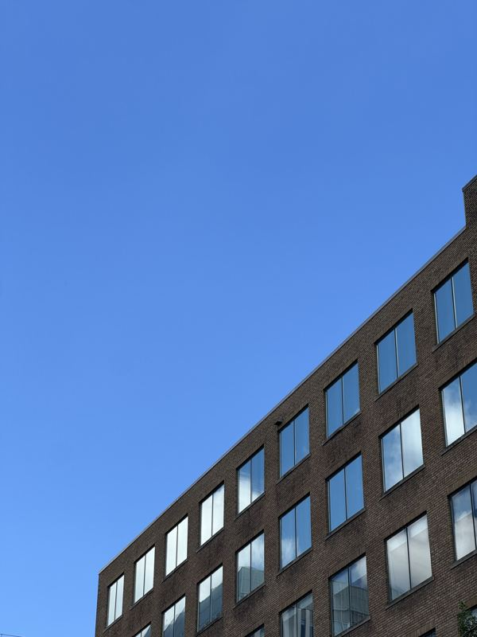
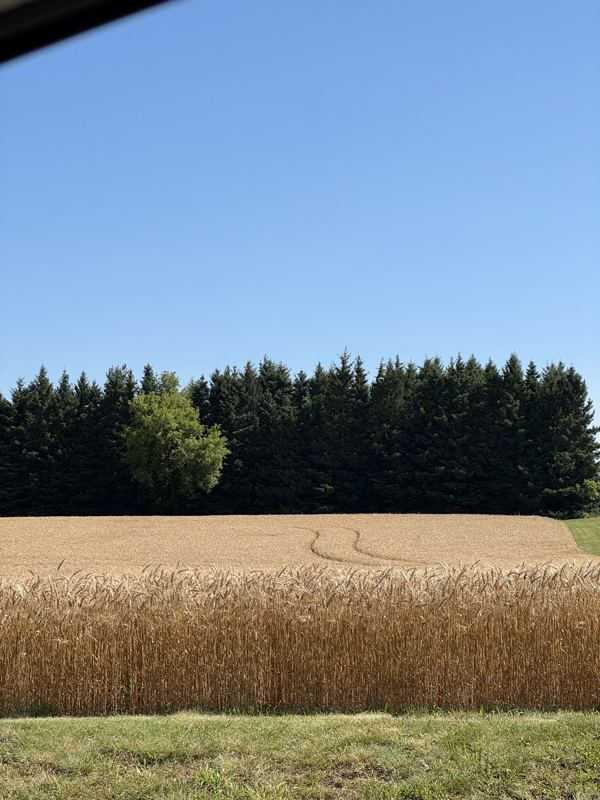
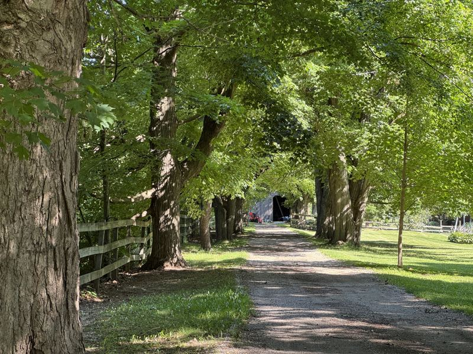
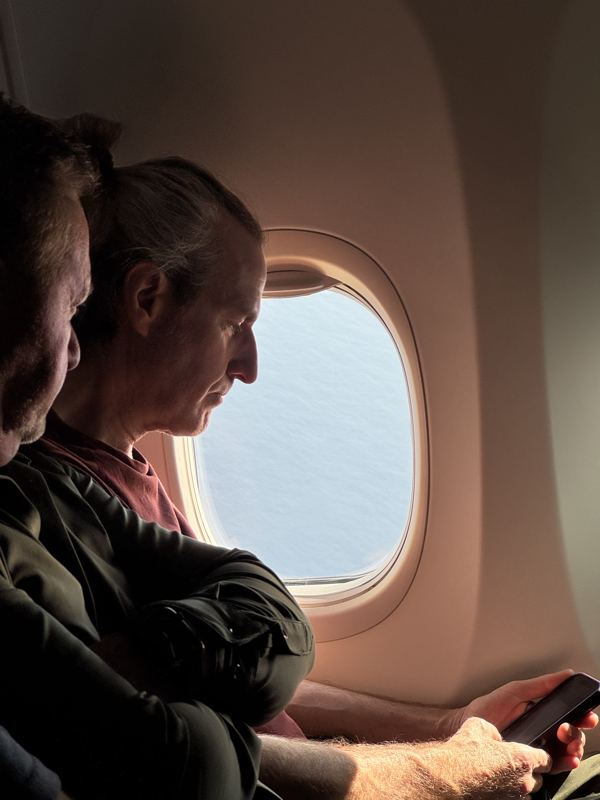
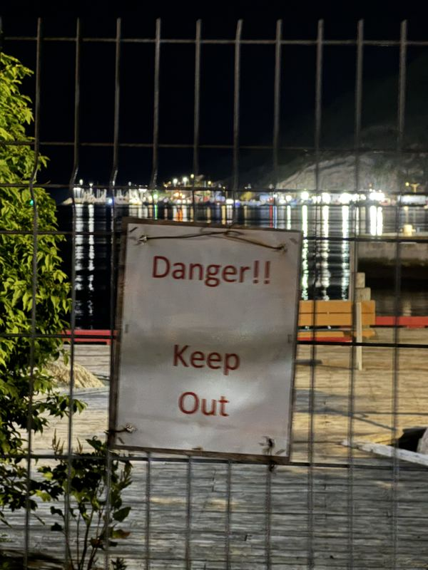
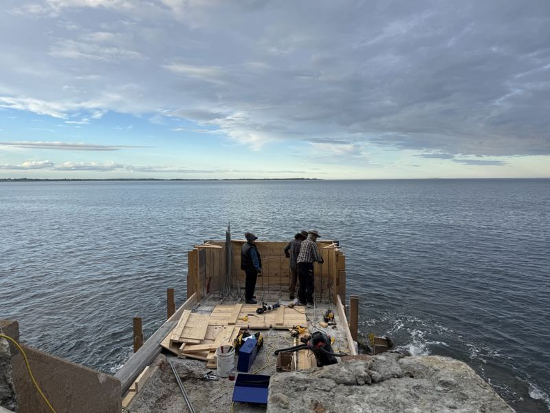
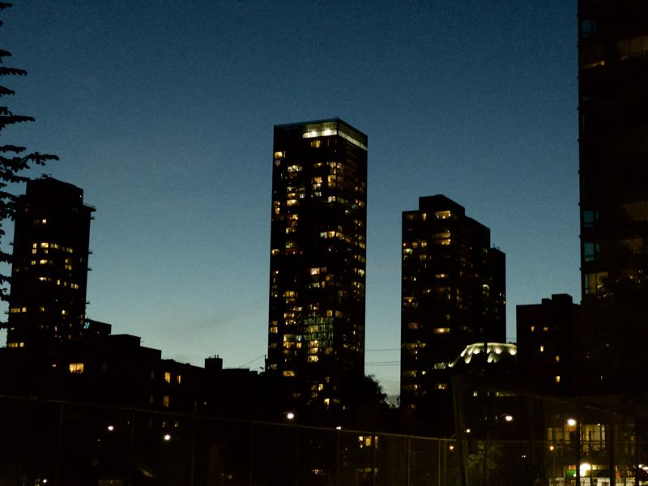

Ville-Marie, Montréal · Aug 8, 2026Ville-Marie, Montréal · Aug 6, 2026Le Plateau-Mont-Royal, Montréal · Aug 6, 2026

Mile-End, Montréal · Aug 5, 2026Le Sud-Ouest, Montréal · Aug 4, 2026Ahuntsic, Montréal · Jul 31, 2026

Downtown, Toronto · Jul 30, 2026Davenport, Toronto · Jul 29, 2026

Guelph/Eramosa · Jul 29, 2026

Kilbride, Burlington · Jul 24, 2026Downtown, Toronto · Jul 22, 2026The Beaches, Toronto · Jul 17, 2026The Beaches, Toronto · Jul 17, 2026Cliffcrest, Toronto · Jul 17, 2026Cliffcrest, Toronto · Jul 17, 2026Cliffcrest, Toronto · Jul 17, 2026

Quidi Vidi, St. John's · Jul 11, 2026

Downtown, St. John's · Jul 11, 2026Downtown, St. John's · Jul 10, 2026The Battery, St. John's · Jul 9, 2026Downtown, St. John's · Jul 8, 2026Downtown, St. John's · Jul 7, 2026Downtown, St. John's · Jul 7, 2026Fort York-Liberty Village, Toronto · Jun 24, 2026South Riverdale, Toronto · Jun 23, 2026North End, Halifax · Jun 22, 2026photo location not available · Jun 22, 2026Downtown Halifax, Halifax · Jun 22, 2026Downtown Halifax, Halifax · Jun 22, 2026Wallbrook · Jun 22, 2026Wallbrook · Jun 22, 2026Old Town of Lunenburg, Lunenburg · Jun 22, 2026

Blue Rocks · Jun 21, 2026Feltzen South · Jun 21, 2026Feltzen South · Jun 21, 2026Peggys Cove · Jun 21, 2026Peggys Cove · Jun 21, 2026Peggys Cove · Jun 21, 2026Mount Thom · Jun 19, 2026Mount Thom · Jun 19, 2026Mount Thom · Jun 19, 2026photo location not available · Jun 18, 2026Cape Breton Highlands National Park · Jun 18, 2026Cheticamp · Jun 18, 2026Cape Breton Highlands National Park · Jun 18, 2026photo location not available · Jun 17, 2026South Lake Ainslie · Jun 17, 2026Antigonish · Jun 17, 2026Antigonish · Jun 17, 2026North Rustico · Jun 17, 2026Cavendish · Jun 17, 2026Cavendish · Jun 17, 2026Cavendish · Jun 17, 2026Downtown, City of Charlottetown · Jun 17, 2026Bayfield, Paroisse de Botsford · Jun 16, 2026photo location not available · Jun 16, 2026Fort York-Liberty Village, Toronto · Jun 16, 2026Harbourfront-CityPlace, Toronto · Jun 16, 2026Harbourfront-CityPlace, Toronto · Jun 16, 2026Harbourfront-CityPlace, Toronto · Jun 16, 2026Harbourfront-CityPlace, Toronto · Jun 16, 2026Spadina—Fort York, Toronto · Jun 16, 2026Moss Park, Toronto · Jun 16, 2026Toronto Centre, Toronto · Jun 14, 2026Toronto Centre, Toronto · Jun 14, 2026Downtown, Toronto · Jun 13, 2026Toronto—St. Paul's, Toronto · Jun 13, 2026Toronto—St. Paul's, Toronto · Jun 13, 2026York University Heights, Toronto · Jun 12, 2026

Downtown, Toronto · Jun 8, 2026Downtown, Toronto · Jun 7, 2026North Riverdale, Toronto · Jun 6, 2026Moss Park, Toronto · Jun 6, 2026Moss Park, Toronto · Jun 6, 2026Moss Park, Toronto · Jun 6, 2026Moss Park, Toronto · Jun 6, 2026Downtown, Toronto · Jun 4, 2026Downtown, Toronto · Jun 4, 2026South Riverdale, Toronto · May 30, 2026South Riverdale, Toronto · May 30, 2026South Riverdale, Toronto · May 30, 2026South Riverdale, Toronto · May 30, 2026South Riverdale, Toronto · May 30, 2026South Riverdale, Toronto · May 30, 2026Beaches—East York, Toronto · May 30, 2026East York, Toronto · May 30, 2026North Riverdale, Toronto · May 30, 2026North Riverdale, Toronto · May 30, 2026North Riverdale, Toronto · May 30, 2026North Riverdale, Toronto · May 30, 2026Harbourfront, Toronto · May 28, 2026Harbourfront, Toronto · May 28, 2026Harbourfront, Toronto · May 28, 2026Spadina—Fort York, Toronto · May 28, 2026Algonquin Island, Toronto · May 28, 2026Ward's Island, Toronto · May 28, 2026Ward's Island, Toronto · May 28, 2026Ward's Island, Toronto · May 28, 2026Ward's Island, Toronto · May 28, 2026Ward's Island, Toronto · May 28, 2026Ward's Island, Toronto · May 28, 2026Spadina—Fort York, Toronto · May 28, 2026Spadina—Fort York, Toronto · May 28, 2026Spadina—Fort York, Toronto · May 28, 2026Spadina—Fort York, Toronto · May 28, 2026Harbourfront, Toronto · May 28, 2026Spadina—Fort York, Toronto · May 28, 2026Harbourfront-CityPlace, Toronto · May 28, 2026
no photos here yet — drop images in /photos and run
python3 generate-photos.py.